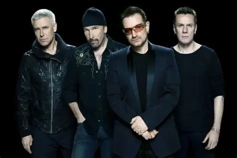

U2
Banda de rock originaria de Dublín (Irlanda) formada en 1976

Integrandes del grupo
Bono
The Edge
Adam Clayton
Larry Mullen Jr
Discografía
Grandes éxitos de U2
Año
Disco
1987
The Joshua Tree
1991
Achtung Baby
1983
War
"The Joshua Tree" fue el albúm más exitoso.
Sitio Web oficial
https://www.u2.com/
Index.html